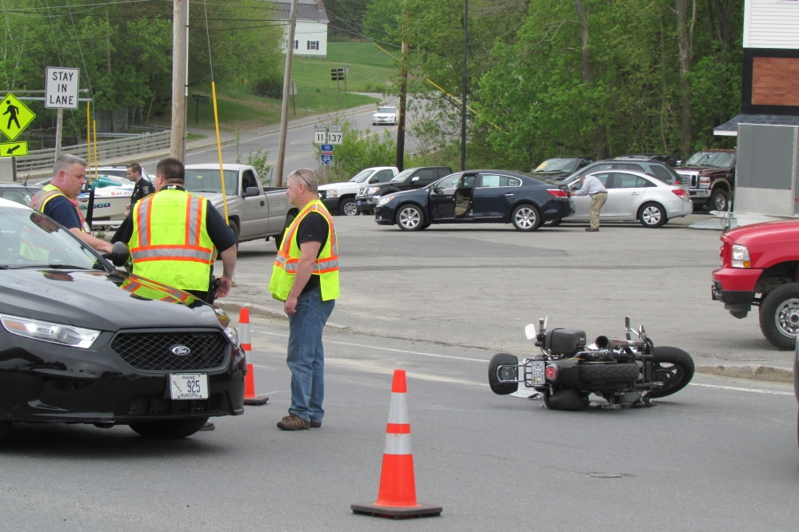

News
Sacramento Car Accident Claims
Sacramento Car Accident Claims
Medical Expenses
Lost Wages
Pain and Suffering Compensation
Longterm Disability
Emotional Distress
Insurance Negotiations
Insurance Negotiations
Claim Filing Process
Settlement Offers
Policy Limits and Coverage
UninsuredUnderinsured Motorist Claims
Bad Faith Insurance Practices
Legal Representation in Court
Legal Representation in Court
Litigation Process
Trial Preparation
Evidence Gathering
Expert Witness Testimony
Jury Selection
About Us
Contact Us

Evidence Gathering
Common Causes of Car Accidents in Sacramento
Common Causes of Car Accidents in Sacramento
Sacramento Car Accident Lawyer
More here:
https://lawyers.findlaw.com/profile/view/4912344_1
https://www.yelp.com/biz/moseley-collins-sacramento-3
https://lawyers.justia.com/lawyer/moseley-cary-collins-iii-119369
Understanding Your Legal Rights and Responsibilities
Gathering Evidence and Documentation for Your Claim
Role of Insurance Companies in Car Accident Claims
Evidence Gathering
Hiring a Sacramento Car Accident Lawyer
Frequently Asked Questions
What is the first step in gathering evidence after a car accident?
The first step is to ensure safety and call emergency services. Once safe, collect contact information from all parties involved and any witnesses.
How important are photographs of the accident scene for evidence?
Photographs are crucial as they provide visual documentation of vehicle positions, damages, road conditions, and other relevant details that can support your case.
What type of documents should be collected for evidence in a car accident case?
Key documents include police reports, medical records, repair estimates, insurance correspondence, and any written statements from witnesses.
Can electronic data be used as evidence in a car accident case?
Yes, electronic data such as dashcam footage, traffic camera recordings, and vehicle black box data can provide valuable information about the accident.
How can witness statements impact the outcome of a car accident case?
Witness statements can corroborate your account of events and provide an unbiased perspective on what occurred during the accident.
Evidence Gathering